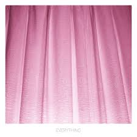

매월 한 명의 아티스트를 선정하여 그들의 음악 세계를 심층적으로 조명하는 포커스 매거진
Focus on: 검정치마
에디터 리뷰: 그가 노래하는 사랑과 일상에 대한 심층 에디토리얼 가이드. 특유의 빈티지한 사운드와 문학적인 가사가 어떻게 우리의 감성을 자극하는지 집중 분석합니다. 대중적인 유행을 좇기보다는 자신만의 확고한 음악적 색깔을 유지하며 수많은 리스너들의 새벽을 위로하는 그의 발자취를 따라가 봅니다.
덤덤하게 시작해 후반부로 갈수록 고조되는 보컬과 밴드 사운드가 깊은 여운의 노래

당신의 세상 속 모든 것이 되어줄 것 같은 깊은 울림의 노래.